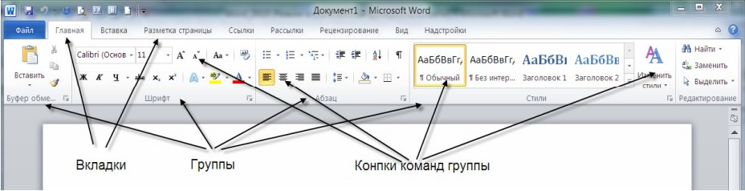
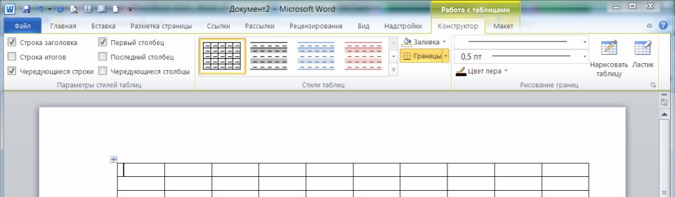
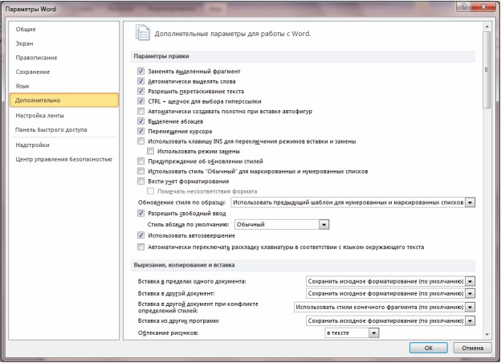

Текстовый редактор Microsoft Word 2010 — это мощное средство для создания текстовых документов личного характера или профессиональной направленности.
С помощью MS Word, вы можете:
- использовать и создавать шаблоны профессионально оформленных отчетов, факсов и других документов;
- формировать, редактировать и форматировать документ на экране;
- комбинировать части существующих документов для создания новых документов;
- оформлять документы с помощью таблиц, списков и графики;
- сохранять документы на диске для их дальнейшего использования.
Интерфейс программы MS Word
В графическом интерфейсе MS Word 2010 используются различные элементы управления, сгруппированные с помощью объекта, называемого «лентой». Она разработана для облегчения доступа к командам и состоит из вкладок, связанных с определенными целями или объектами. Каждая вкладка, в свою очередь, состоит из нескольких групп взаимосвязанных элементов управления. По сравнению с меню и панелями инструментов, используемых в предыдущих версиях MS Word, «лента» вмещает значительно больше содержимого — кнопок, коллекций, элементов диалоговых окон и т. д.
Пользовательский интерфейс «лента»
Все команды сведены в группы, состав которых отображается при выборе определенной вкладки, расположенной на ленте.

Рис. Структура ленты
Вкладки ориентированы на выполнение конкретной задачи, группы на каждой вкладке разбивают задачи на ее составляющие, например, группа Шрифт для форматирования элементов текста, группа Абзац для форматирования параметров абзаца и т.д. Кнопки команд в каждой группу служат для быстрого выполнения команд.
Вкладку можно выбрать, щелкнув по ней левой кнопкой мыши (ЛКМ). Для выбранной вкладки отобразятся группы с кнопками команд.
В группах справа от названия групп располагаются маленькие значки – Кнопки вызова диалоговых окон. По нажатию такой кнопки открывается соответствующее диалоговое окно или область задач, содержащая дополнительные параметры, связанные с данной группой. Окна диалога — используются для введения дополнительных данных, необходимых для выполнения тех или иных действий. Некоторые ОД содержат Вкладки (Tabs), для более удобной группировки настраиваемых параметров. ОД можно перемещать по экрану, с помощью строки заголовка. ОД нельзя свернуть. После настройки всех необходимых параметров, ОД необходимо закрыть любым корректным способом: нажатие на кнопку ОК или Отмена.
Office Word 2010 позволяет редактировать стандартные вкладки, создавать новые вкладки и размещать на них выбранные кнопки команд. Для доступа к инструментам работы с вкладками перейдите на вкладку Файл – Параметры – Настройка ленты.
Кроме набора вкладок, которые отображаются на «ленте» при запуске Office Word 2010, имеются вкладки, называемые контекстными инструментами, которые появляются в интерфейсе в зависимости от выполняемой задачи.
Контекстные инструменты. Контекстные инструменты позволяют работать с элементом, который выделен на странице, например, с таблицей, изображением или графическим объектом. Если щелкнуть такой элемент, относящийся к нему набор контекстных вкладок, выделенный цветом, появится рядом со стандартными вкладками.
Например, на рисунке после добавления таблицы появились две новые вкладки Конструктор и Макет, предназначенные для работы с таблицами.

Рис. Контекстные инструменты
Контекстные меню
Контекстные меню (Pop-up menu) содержат список наиболее часто используемых команд. Контекстное меню появляется при щелчке правой кнопкой мыши (ПКМ) на элементе или объекте. Содержание контекстного меню специфично для объекта.
Панель быстрого доступа
Панель быстрого доступа по умолчанию расположена в верхней части окна приложения Word 2010 (см. Приложение 1) и предназначена для быстрого доступа к наиболее часто используемым функциям. Панель быстрого доступа можно настраивать, добавляя в нее новые команды.
Настройка панели быстрого доступа
Для настройки панели быстрого доступа, а также добавления или удаления команд щелкните по ней правой кнопкой мыши (ПКМ) и выберите пункт меню «Настройка панели быстрого доступа». С помощью кнопок («Добавить», «Удалить» и др.), расположенных в открывшемся окне, настройте панель быстрого доступа. Также это можно сделать, выбрав вкладку Файл – Параметры – Панель быстрого доступа.
Другие элементы интерфейса
Строка заголовка (Title bar) содержит информацию об имени программы и имени загруженного (активного) документа. При открытии нового документа ему присваивается временное имя ДокументN (DocumentN), где N — это число.
Масштабная линейка (Ruler) используется для установки отступов в абзацах и задания смещения текста внутри строки.
Полосы прокрутки (Scroll bars) (вертикальная и горизонтальная) предназначены для просмотра части документа, не помещающегося целиком в окне.
Строка состояния (Status bar) представляет собой горизонтальную полосу в нижней части окна документа. В строке состояния отображаются данные о текущем состоянии содержимого окна и другие сведения, зависящие от контекста.
Курсор ввода перемещается по мере ввода текста и указывает место в редактируемом документе, куда будет произведена вставка текста.
Параметры Word (дополнительно)

Рис. Параметры Word (дополнительно)
Параметры правки
- Заменять выделенный фрагмент. Удаление выбранного текста при вводе нового. Если этот флажок снят, выделенный текст не удаляется, а новый текст вставляется перед ним.
- Разрешить перетаскивание текста. Разрешение перемещения или копирования выделенного текста посредством перетаскивания. Чтобы переместить текст, выделите его, а затем перетащите на новое место. Чтобы скопировать текст, выделите его, а затем, удерживая нажатой клавишу CTRL, перетащите текст на новое место.
- Автоматически выделять слова. Выделение всех слов при выборе полностью одного слова и затем части следующего слова. Если этот флажок установлен, при двойном щелчке слова Word выбирает слово и следующий за ним пробел.
- Использовать клавишу INS для переключения режимов вставки и замены. Включение и выключение режима замены нажатием клавиши INSERT.
- Использовать режим замены. Замена существующего текста при печати по одному символу. Если флажок Использовать клавишу INS для переключения режимов вставки и замены установлен, этот параметр можно включать и выключать нажатием клавиши INSERT.
Показывать содержимое документа
- Показывать фоновые цвета и рисунки в режиме разметки. Отображение цветов фона и рисунков.
- Переносить текст по границе окна документа. Этот параметр служит для облегчения чтения на экране.
- Показывать пустые рамки рисунков. Отображение пустых рамок на месте каждого рисунка в документе. Задание этого параметра ускоряет процесс прокрутки документа, в котором находится большое количество графики.
- Показывать границы текста. Отображение пунктирных линий, указывающих расположение полей страницы, колонок текста и абзацев. Эти границы предназначены только для разметки и на печать не выводятся
- Показывать коды полей вместо их значений. Отображение в документах кодов полей вместо значений полей. Например, можно увидеть код { TIME @/"MMMM, d, YYYY" } вместо значения «4 февраля 2008 года». Снимите этот флажок, чтобы просматривать значения полей.
Экран
- Число документов в списке последних файлов. Введите число элементов от 1 до 50, которые будут отображаться в списке Последние документы.
- Показывать все окна на панели задач. Отображение значка на панели задач Microsoft Windows для каждого окна, открытого в приложении Microsoft Office. Если снять этот флажок, на панели задач для каждого открытого приложения будет отображаться только один значок.
- Оптимизировать расположение знаков для макета, а не для удобочитаемости. Расположение символов относительно блоков текста при отображении в точности как они будут выглядеть в напечатанном документе. Если выбрать этот параметр, интервал между символами может быть искажен. Для облегчения чтения на экране снимите этот флажок.
Печать
- Использовать черновое качество. Печать документа с минимальным форматированием, что может ускорить процесс печати. Многие принтеры эту функцию не поддерживают.
- Фоновая печать. Печать документов в фоновом режиме, который позволяет продолжать работать во время печати. Режим одновременной работы и печати требует большого объема доступной памяти. Если при работе с документом во время печати наблюдаются неприемлемые замедления, снимите этот флажок.
- Печать в обратном порядке. Печатать страниц в обратном порядке, начиная с последней страницы документа. Не используйте этот параметр при печати конвертов.
- Печать кодов полей вместо их значений. Печать кодов полей вместо значений полей. Например, { TIME @/"MMMM, d, YYYY" } вместо значения «4 февраля 2008 года»..
При печати этого документа
- При печати этого документа. Выберите документ, к которому применяются эти параметры печати. В списке можно выбрать название уже открытого документа или вариант Все новые документы, чтобы параметр применялся ко всем вновь создаваемым документам.
- Печатать Postscript поверх текста. Печатать код PostScript, если документ содержит поля PRINT.
- Печать только данных из формы. Печать данных, введенных в интерактивную форму, без печати самой формы.
Сохранение
- Всегда создавать резервную копию. Создание резервной копии при каждом сохранении документа. Новая резервная копия заменяет имеющуюся. К имени файла всех резервных копий Word добавляет слово «Копия» и расширение .wbk. Резервные копии сохраняются в той же папке, где и исходный документ.
- Копировать удаленные файлы на этот компьютер и обновлять их при сохранении. Временное хранение локальной копии файла, загруженного с сетевого или сменного диска. При сохранении локальной копии все внесенные изменения сохраняются в исходной копии. При отсутствии доступа к исходному файлу будет выдан запрос на сохранение файла в другом месте для предотвращения потери данных.
- Разрешить фоновое сохранение. Сохранение документов во время работы с ним. При сохранении документа в фоновом режиме в строке состояния отображается индикатор хода операции сохранения.
Общие
- Автоматически обновлять связи при открытии. Автоматическое обновление любого содержимого, связанного с другими файлами, при каждом открытии документа.
- Разрешить открытие документа в режиме черновика. Выберите этот параметр, чтобы иметь возможность открыть документ в режиме черновика.
- Разрешить фоновую разбивку на страницы. Автоматическая перенумерация страниц документов во время работы. Данный параметр доступен только в режимах черновика и структуры. Если этот флажок снят, номера страниц, отображаемые в строке состояния, не обновляются, пока не будет включен режим разметки страницы.
- Расположение. Список местоположений используемых по умолчанию папкам, содержащих документы, шаблоны и другие элементы, создаваемые или используемые в Microsoft Word. Выберите из списка элемент, который требуется изменить, а затем нажмите кнопку Изменить, и укажите новую папку